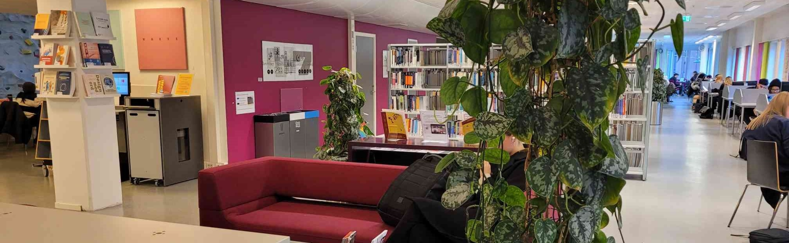

Photo by Sara Yldrim
[Intro]
A long, long time ago
In a galaxy far away
Naboo was under an attack
And I thought me and Qui-Gon Jinn
Could talk the Federation into
Maybe cutting them a little slack
But their response, it didn't thrill us
They locked the doors and tried to kill us
We escaped from that gas
Then met Jar Jar and Boss Nass
We took a bongo from the scene
And we went to Theed to see the Queen
We all wound up on Tatooine
That's where we found this boy...
[Chorus]
Oh my, my, this here Anakin guy
May be Vader someday later, now he's just a small fry
And he left his home and kissed his mommy goodbye
Sayin',
"Soon, I'm gonna be a Jedi"
"Soon, I'm gonna be a Jedi"
[Verse 1]
Did you know this junkyard slave
Isn't even old enough to shave?
But he can use the Force, they say
Ah, do you see him hitting on the queen
Though he's just nine and she's fourteen?
Yeah, he's probably gonna marry her someday
Well, I know he built C-3PO
And I've heard how fast his pod can go
And we were broke, it's true
So we made a wager or two
He was a prepubescent flyin' ace
And the minute Jabba started off that race
Well, I knew who would win first place
Oh yes, it was our boy
[Chorus]
We started singin' "My, my, this here Anakin guy"
May be Vader someday later, now he's just a small fry
And he left his home and kissed his mommy goodbye
Sayin',
"Soon I'm gonna be a Jedi"
"Soon I'm gonna be a Jedi""
[Verse 2]
Now we finally got to Coruscant
The Jedi Council we knew would want
To see how good the boy could be
So we took him there and we told the tale
How his midichlorians were off the scale
And he might fulfill that prophecy
Oh, the Council was impressed, of course
Could he bring balance to the Force?
They interviewed the kid
Oh, training they forbid
Because Yoda sensed in him much fear
And Qui-Gon said "Now listen here
Just stick it in your pointy ear
I still will teach this boy"
[Chorus]
He was singin' "My, my, this here Anakin guy"
May be Vader someday later, now he's just a small fry
And he left his home and kissed his mommy goodbye
Sayin',
"Soon I'm gonna be a Jedi"
"Soon I'm gonna be a Jedi"
[Bridge]
We caught a ride back to Naboo
Cause Queen Amidala wanted to
I frankly would've liked to stay
We all fought in that epic war
And it wasn't long at all before
Little hotshot flew his plane and saved the day
And in the end, some Gungans died
Some ships blew up and some pilots fried
A lot of folks were croakin'
The battle droids were broken
And the Jedi I admire most
Met up with Darth Maul and now he's toast
Well, I'm still here and he's a ghost
I guess I'll train this boy
[Chorus]
And I was singin' "My, my, this here Anakin guy"
May be Vader someday later, now he's just a small fry
And he left his home and kissed his mommy goodbye
Sayin',
"Soon I'm gonna be a Jedi"
"Soon I'm gonna be a Jedi"
[Outro]
We were singin' "My, my, this here Anakin guy"
May be Vader someday later, now he's just a small fry
And he left his home and kissed his mommy goodbye
Sayin',
"Soon I'm gonna be a Jedi"
Lyrics by "Weird Al" Yankovic
The P35 library is ln the 3rd floor, and has a convenient digital search system that can be accessed using any of the library computers. There's also ample tables and sitting areas.
Photo by Hannah Sepanak
Thank you for visiting the OsloMet P35 building, please visit again soon!